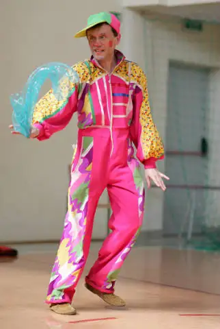
Klaun
Zaczyna przedstawienie, rozśmiesza całą salę i zaprasza dzieci do zabawy na scenie.
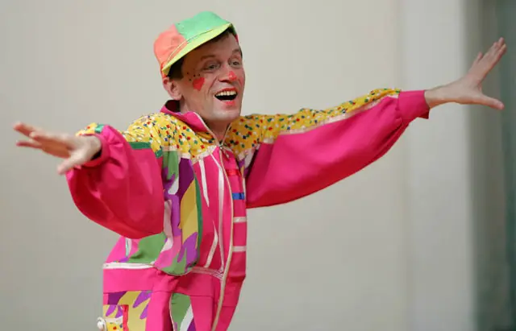
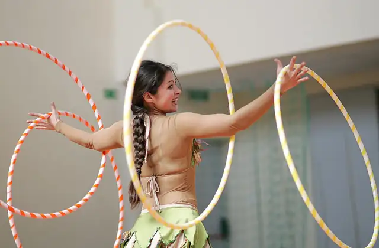
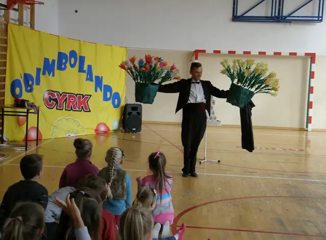
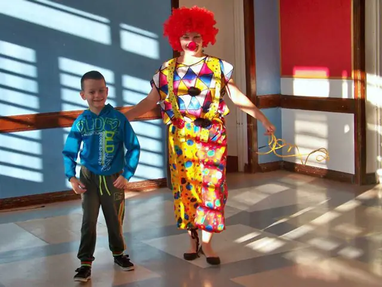
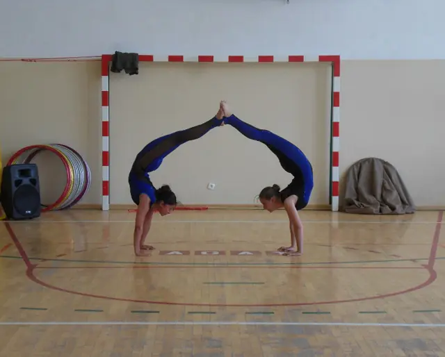
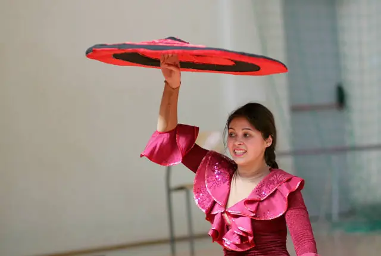
Klaun, iluzja, akrobatyka, hula-hoop i tresowany piesek. Występujemy w szkołach, przedszkolach, na festynach i imprezach rodzinnych w całej Polsce.
Zapytaj o terminKażdy występ układamy pod miejsce i widzów, od sali gimnastycznej w szkole po scenę na festynie. Dzieci nie tylko oglądają, ale same biorą udział w sztuczkach.

Zaczyna przedstawienie, rozśmiesza całą salę i zaprasza dzieci do zabawy na scenie.
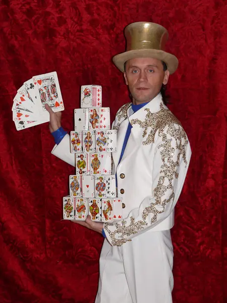
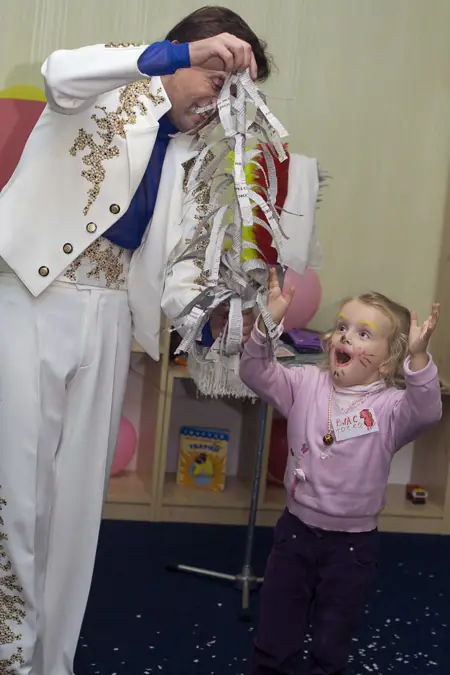
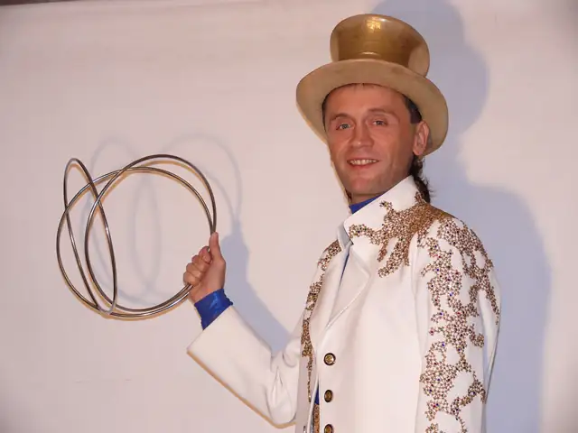
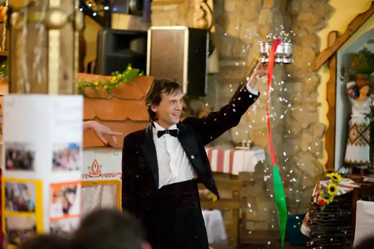
Karty, obręcze, kwiaty i chusty. Pomocnikami iluzjonisty są dzieci z widowni.
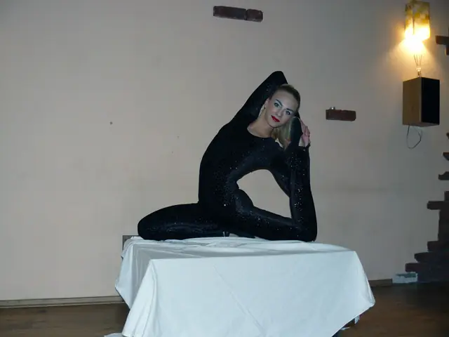
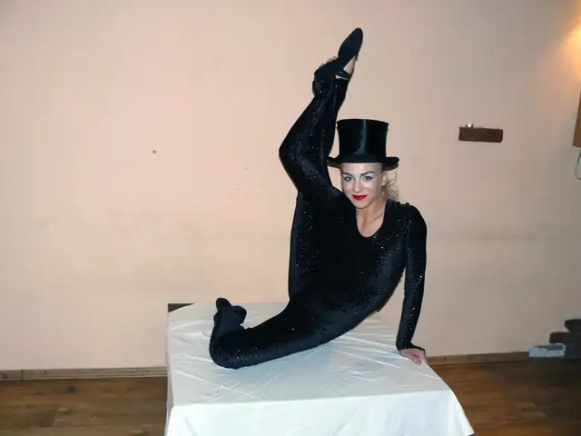
Mostki, szpagaty i figury w parze, na zwykłej sali gimnastycznej.
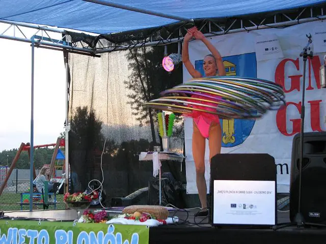
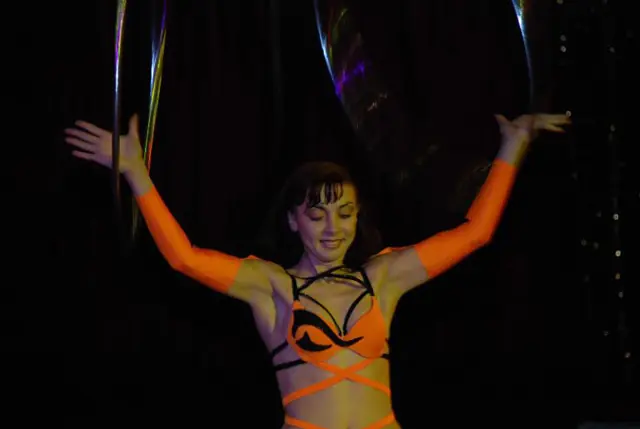
Taniec z kilkoma obręczami naraz, w sali i na scenie plenerowej.
Wirujące talerze, obręcze i równowaga, której dzieci próbują potem same.
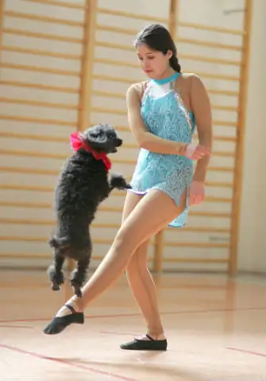
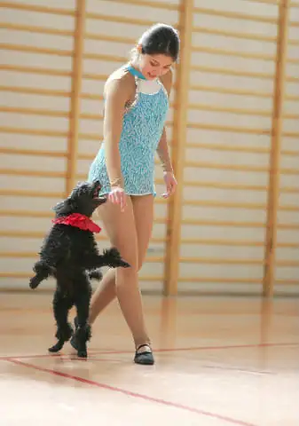
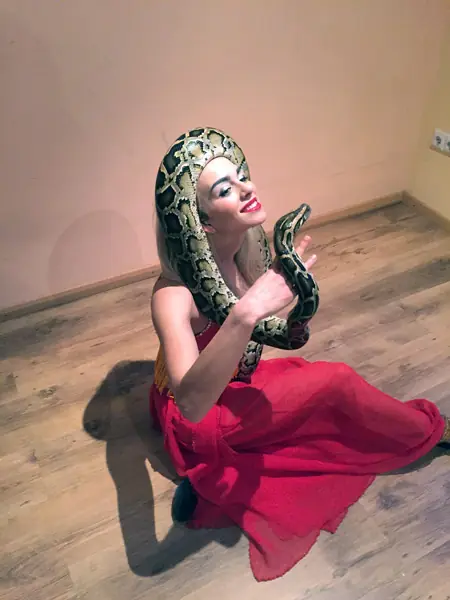
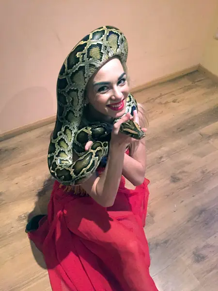
Tresowany piesek, który tańczy z artystką, i pyton na rękach artystki.
Na życzenie w programie także jazda na monocyklu, szczudła, akrobacje na wałkach i transformers.
Przyjedziemy do każdego miejsca w Polsce. Występ dopasujemy do wieku widzów, wielkości sali i charakteru imprezy.
W naszych przedstawieniach występują wielokrotni laureaci konkursów i festiwali cyrkowych. Swoje umiejętności zdobywali w znanych ukraińskich szkołach cyrkowych i pokazywali je w różnych zakątkach świata.
Stawiamy na profesjonalizm, nietuzinkowość i bezpieczeństwo. Najlepszą rekomendacją są dla nas radość na twarzach dzieci i brawa widowni po każdym występie.
Występ młodych artystów z Ukrainy zachwycił dzieci i młodzież, które nie tylko podziwiały sztuczki i akrobacje cyrkowców, ale mogły w nich czynnie uczestniczyć.
Zespół Szkół w Jankowie Pierwszym4 grudnia 2015
Program, który przedstawili cyrkowcy, wzbudził wielki podziw wśród dzieci i nauczycieli.
Przedszkole w Skarżysku Kościelnym12 listopada
Wszystkie dzieci z oddziałów zerowych z zapartym tchem śledziły występy pary cyrkowców.
Szkoła Podstawowa nr 5 w Łukowie24 marca 2015
Kolorowo wymalowany klaun, ulubieniec dzieci, rozśmieszał całą publiczność.
Szkoła w Kunowie (woj. świętokrzyskie)4 listopada 2015
Podziw wzbudzał pies, przyjaciel klauna, który wykonywał wszystkie jego polecenia.
Niepubliczna Szkoła Podstawowa w Owadowie24 lutego 2015
Uczniowie mogli podziwiać sztuczki cyrkowe, a także brać w nich udział.
Szkoła Podstawowa w Klewie13 listopada 2014
Fragmenty relacji opublikowanych przez szkoły i przedszkola na ich stronach internetowych.
Napisz, kiedy i gdzie ma być występ, a odpowiemy z propozycją programu.
883 146 345PHU Variete Dariusz Lesiak
ul. Grota-Roweckiego 7/15, 93-217 Łódź
NIP 728-117-28-82